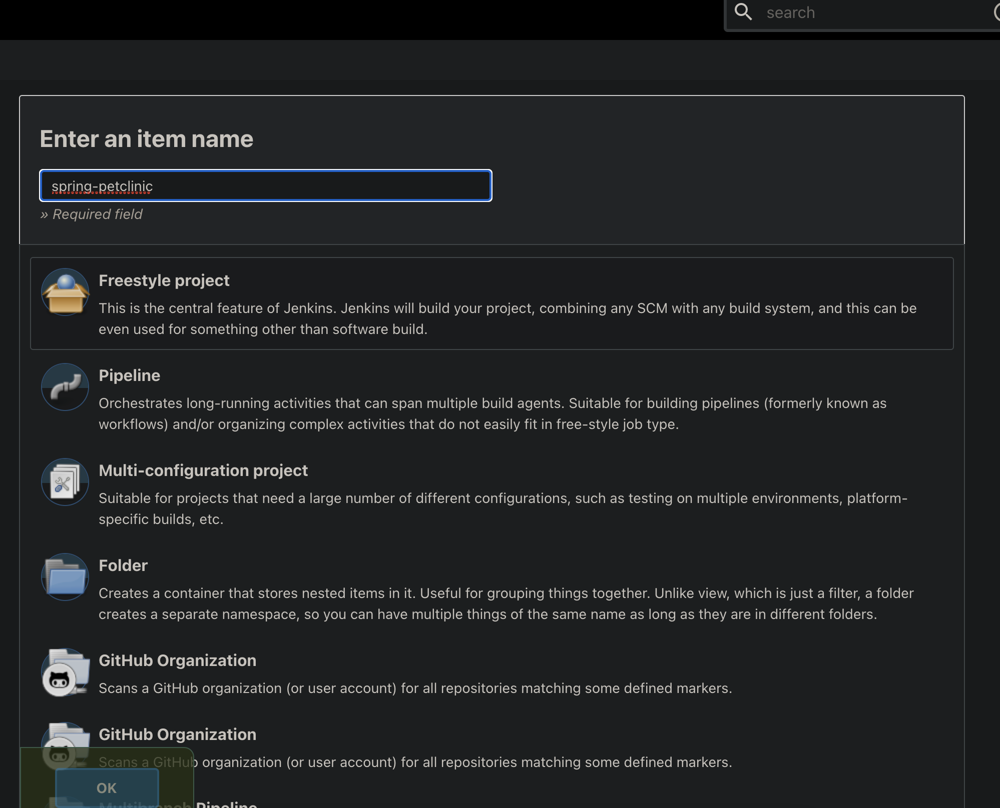
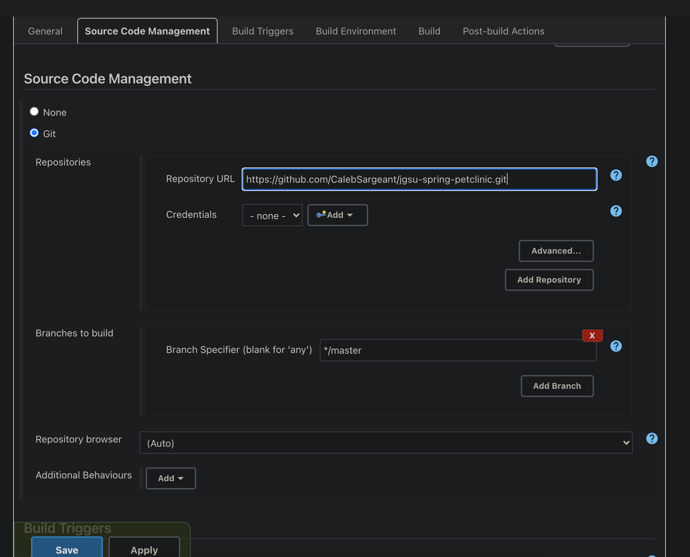
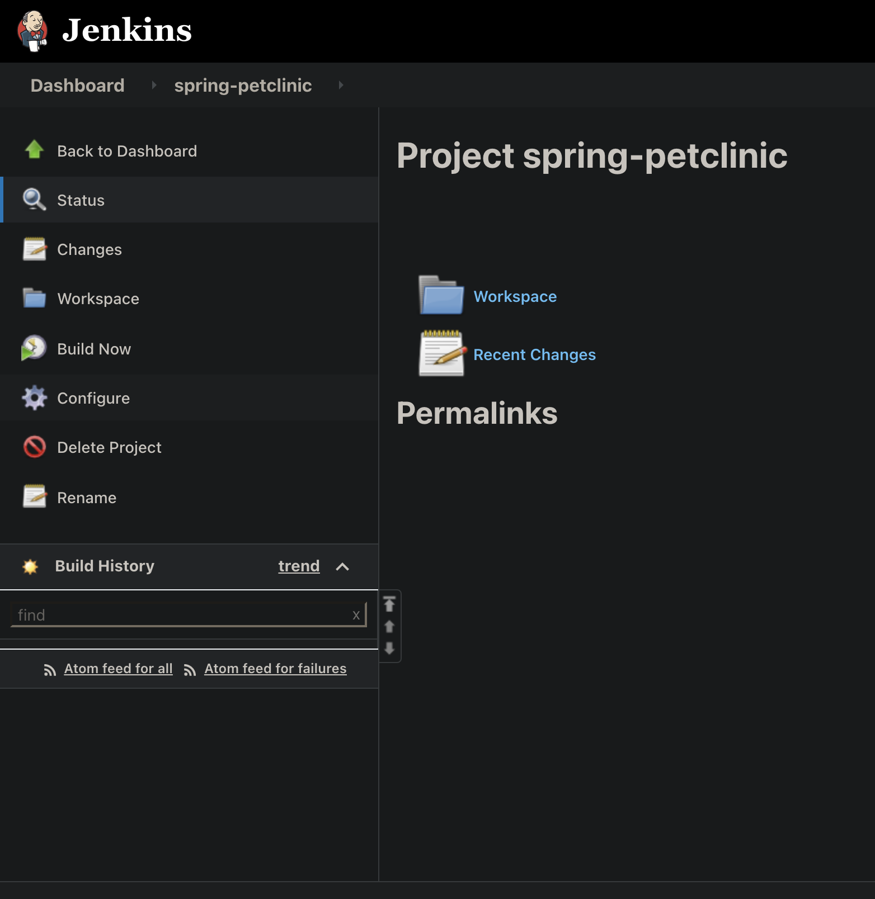
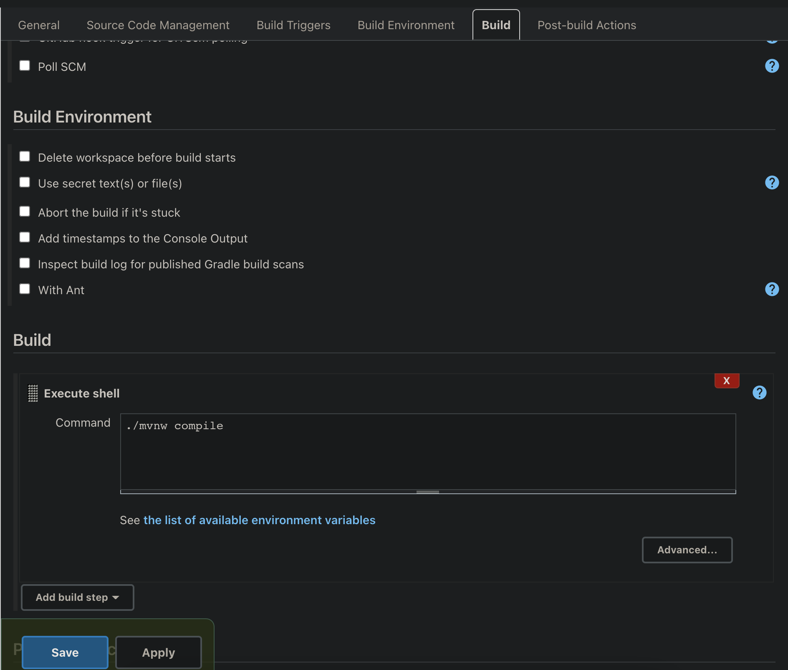
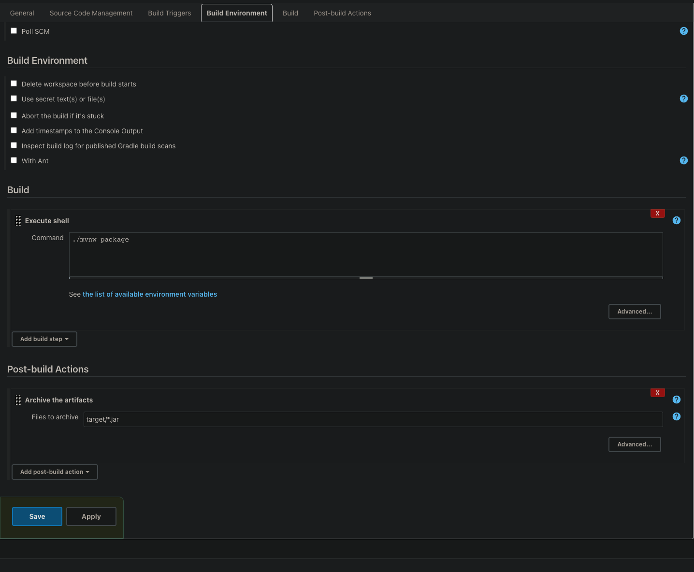
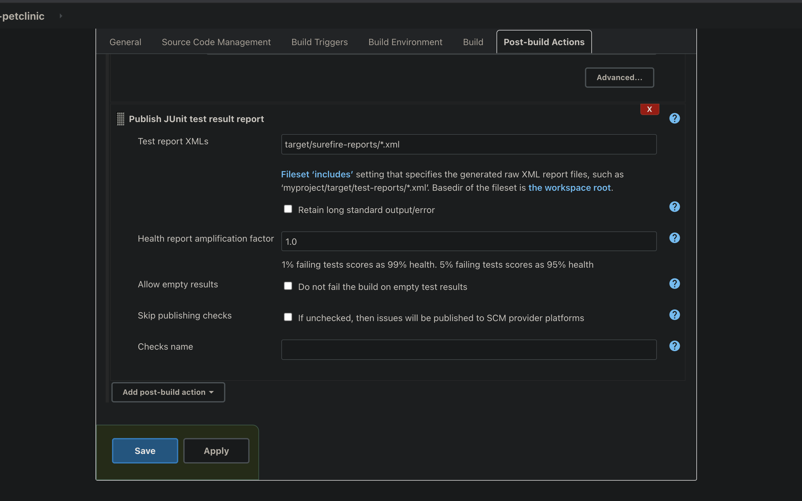
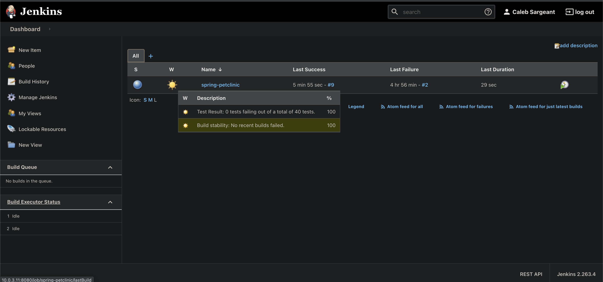
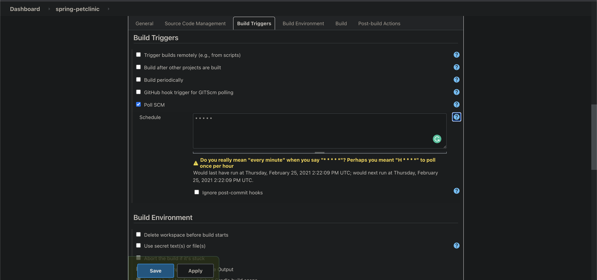
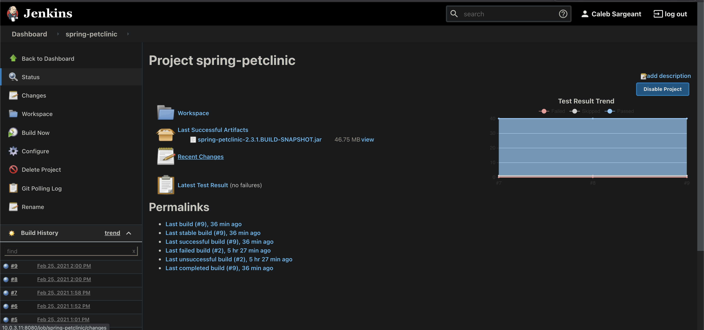

Building Applications with Freestyle Jobs¶
Anatomy of the Build¶
Git repo
Compile
Test
Package
Clean
rinse & repeat
Manually Building with Maven and Running App¶
git clone git@github.com:CalebSargeant/jgsu-spring-petclinic.git --config core.sshCommand="ssh -i ~/.ssh/github"
cd jgsu-spring-petclinic
./mvnw compile
./mvnw test
./mvnw package
java -jar target/spring-petclinic-2.3.1.BUILD-SNAPSHOT.jar
Packaging an App in Jenkins¶
Note
Workspaces are temporary!

Give your item a name¶

Input the repo url, ensure branch is correct (main vs master)¶

To build a project, click Build now¶

You can use mvnw commands for building¶

We’ll want to package our app, also exclude *.jar from being deleted¶

You can configure test reports from the xml files¶

Checking the health status of a build¶

Configuring polling git for changes to code to build automatically¶

You can check the recent changes of a build and drill down into git diffs¶